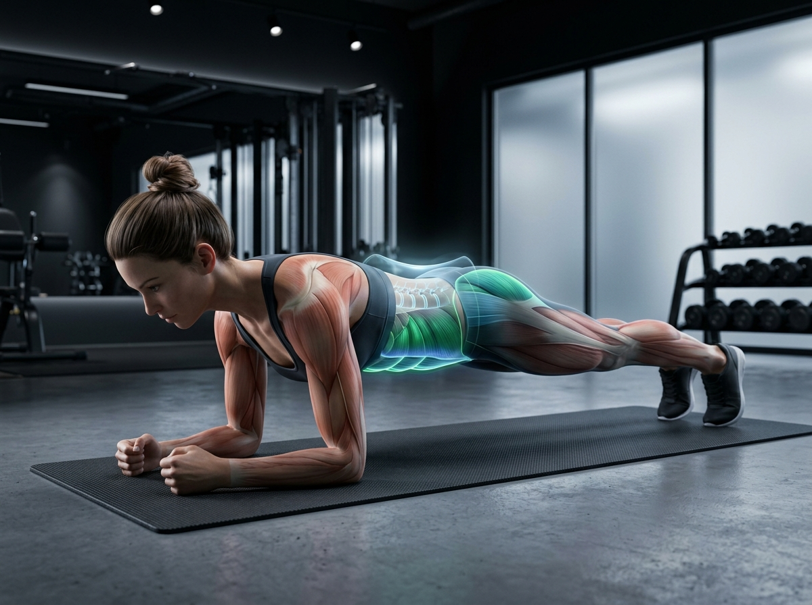

Aquecimento & Core

🔍 Ampliar
Prancha Frontal Isométrica
🎯 Alvo: Transverso abdominal e estabilização lombar
⏱️ 3 Séries
⏳ 20 a 30s
🛡️ Isometria Neutra
🧬 Ativação Biomecânica da Imagem:
Verde Esmeralda: Transverso Abdominal & Reto Abdominal em contração isométrica rígida.
Ciano / Coluna: Descompressão e proteção ativa dos discos lombares L4-L5/S1.
Glúteos & Pernas: Travamento horizontal sem deixar o quadril afundar.
Marcar Séries Concluídas:
0/3
📍 Posição:
Deitado de barriga para baixo, apoie os antebraços e pontas dos pés no chão. Cotovelos sob os ombros.
⚡ Execução:
Eleve o quadril formando uma linha reta dos ombros aos calcanhares. Puxe o umbigo para dentro e aperte os glúteos.
⚠️ Cuidado com a Hérnia: Não deixe a bacia cair em direção ao chão. Se cansar antes dos 30s, desça com controle.